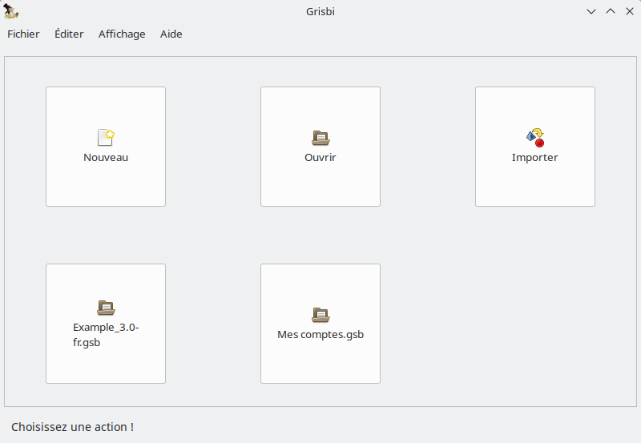
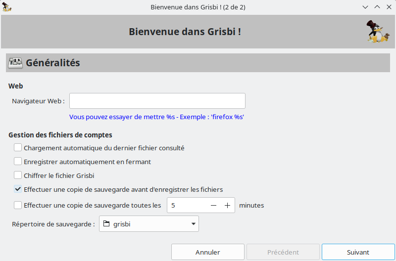
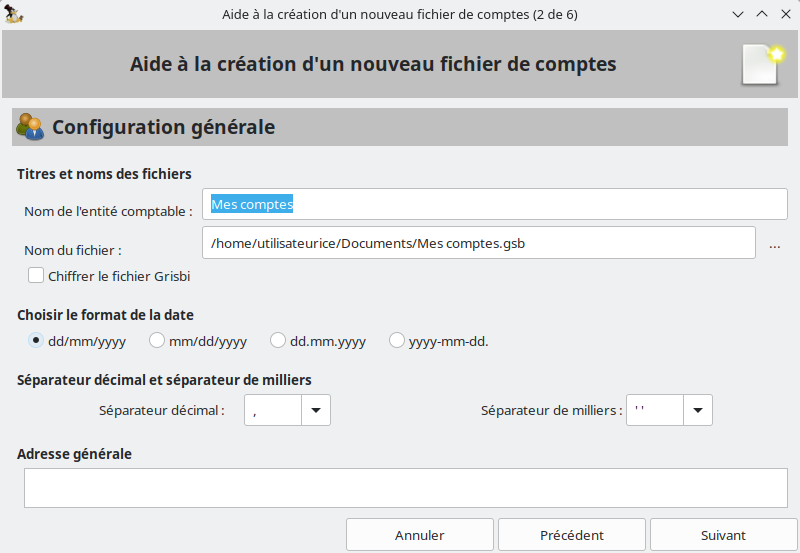
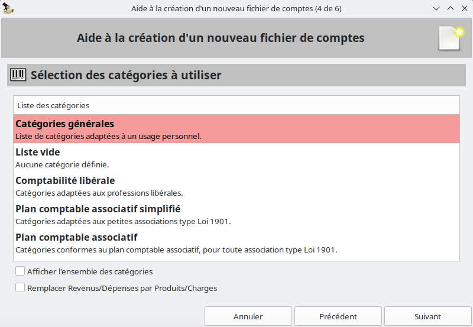
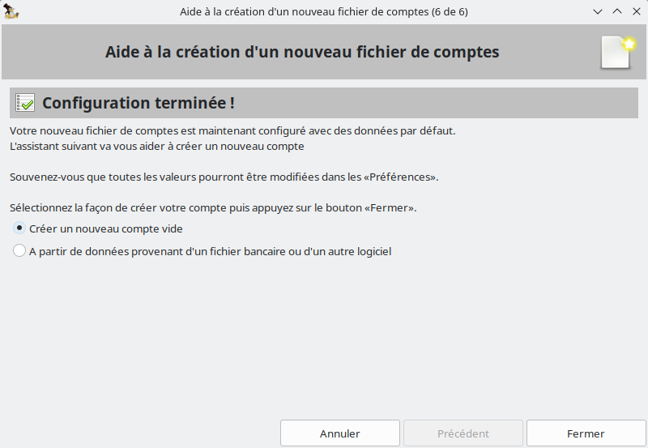

| Copyright © 2004 Loïc Breilloux |
| Copyright © 2004 Benjamin Drieu |
| Copyright © 2011-2014 Jean-Luc Duflot |
| Copyright © 2018 Bob Anderson (en) |
| Copyright © 2018-2020 Martin Stromberger (de) |
| Copyright © 2024 Dominique Brochard |
| _________ |
Plusieurs utilisateurs de Grisbi ont demandé à Daniel Cartron, rédacteur de la première version du manuel, d’insérer dans celui-ci un bref rappel de la signification de ce mot, qui, à son grand dam, est retombé en désuétude.
Ses premières (brèves) recherches n’ayant pas ramené de résultats valant la peine d’être publiés, il avait laissé tomber jusqu’à ce qu’un jour il prenne le temps de passer quelques moments dans une bibliothèque bien fournie en dictionnaires de toutes sortes. Et là, la moisson fut abondante. Tellement abondante que Daniel Cartron a longuement hésité pour savoir ce qu’il allait garder et ce qu’il allait éliminer. . .
Finalement il décida de tout garder, même si on passe ainsi à un paragraphe de quatre pages. Il a juste opéré un classement des articles les plus courts vers les plus longs.
En effet il trouve intéressant d’étudier les divergences entre les différents dictionnaires, mais plus encore de constater les ressemblances, à ce point frappantes que l’on pourrait intituler ce chapitre non pas Le jeu des sept erreurs mais Qui a copié qui ? À vous de trouver. . .
Et il a aussi rajouté un passage sur le film puisque pour ceux qui savent encore ce que grisbi veut dire cela tient essentiellement à la renommée méritée de cette œuvre.
Voici donc quelques sources sur l’étymologie du mot grisbi :
[grizbi] n. m. Arg. Argent — De gris (monnaie grise ; cd. rouchi griset [1834], « liard »), et suff. pop. -bi ; 1895, répandu en 1953.
[grizbi] n. m. (de gris[et], pièce de six liards [1834, Esnault] — dér. de gris, à cause de la couleur [cf. aussi grisette, « monnaie » — XVIIe s. —, et monnaie blanche et grise, 1784, Esnault] — avec le suff.arg. -bi ; 1896, Delesalle).
Arg. Argent : Touchez pas au grisbi (titre d’un roman d’Albert Simonin [1953]).
n.m. apparu en 1895 (grisbis) et répandu à partir de 1953 par le roman Touchez pas au grisbi de A. Simonin, serait composé de gris « monnaie grise » (1784 : cf. le rouchi griset « pièce de six liards », 1834 ; et grisette « monnaie », v. 1634) et de l’élément bi d’origine obscure : grisbi, « argent » en argot, pourrait être un composé tautologique de gris et bis.
Origine très controversée : soit de griset, « pièce de monnaie », et d’un mystérieux suffixe -bi, ou du pain à la fois gris et bis, ou du slang anglais crispy, argent ; nous proposons d’y voir un emploi métonymique de gripis 1628 [Cheneau], grispin, grisbis 1849 [Halbert], « meunier », c’est-à-dire « celui qui a chez lui du blé » 1895 [Delsalle] mais remis en circulation par « Touchez pas au grisbi », célèbre roman de A. Simonin, paru en 1953.
VARIANTES — grijbi : 1902 [Esnault] — grèzbi : vers 1926 [id.]
DÉRIVÉS — grisbinette n.f. Pièce de cent anciens francs : 1957 [Sandry-Carrère].
Arg. Argent. Synon. pop. fric, galette, pèze, pognon. Le grisbi je suis assez grand pour aller le chercher moi-même ! ( . . .) Riton qu’avait même pas su se tenir en homme ( . . .) dès qu’il s’était senti assez de grisbi (Simonin, Touchez pas au grisbi, 1953, p. 231).
Prononc. : [grizbi]. Étymol. et Hist. 1896 grisbis arg. « argent » (Delesalle, Dict. arg.-fr. et fr.-arg.). Mot composé du rad. de griset, au sens de « pièce de six liards » (1834 ds Esn.), dér. de gris, à cause de la couleur (cf. aussi ca 1634 grisette « monnaie », La Muse Normande de D. Ferrand, éd. A. Héron, II, 91 ; 1784, Brest, monnaie blanche et grise ds Esn.), et d’une seconde partie d’orig. obsc. qui représente peut-être le suff. pop. -bi, à rapprocher de nerbi « très noir » (d’apr. Esn.). Il n’est pas impossible que grisbi (anciennement grisbis) soit un composé tautologique de gris et de bis.
Bbg. Rigaud (A.). L’arg. litt. Vie lang. 1972, pp. 114-117.
[grizbi] n. m. — 1895 : répandu 1953 par le roman de Simonin Touchez pas au grisbi ; le mot était rare ou archaïque v. 1950 : de gris « monnaie grise » (cf. rouchi griset « liard », 1834), et suff. pop. Argot. Argent. T’as du grisbi ?
1 — Cette expression : « Ne touchez pas au grisbi » devient une variante de « Ne chahutez pas avec les nippes ». C’est le maître mot qui dirige la chronique de ces chevaliers de fortune mal acquise qui donnèrent de la mobilité aux romans de cape et de mitraillette de Peter Cheyney.
P. Mac Orlan, in Albert Simonin, Touchez pas au grisbi, Préface, p. 6.
2 — « Te casse pas la tête pour les politesses . . .D’abord on a pas le temps si tu veux que je te trouve Ali. Tout dépend de ce qu’il a de grisbi en fouille ; s’il est armé, on a une chance de le trouver au flambe, à la partie du Carillon »
Albert Simonin, Touchez pas au grisbi, p. 147.
n.m. (grisby)
Argent (intrinsèquement).
« Au petit caïd de l’équipe, un mouflet à casquette torpédo, bleu de chauffe et pompes vernies, la môme venait d’affirmer qu’elle me frimait seulement pour le bon motif, pour me soulager de mes cent sacs. Il avait répliqué, le vilain jalmince : — Le grisbi, je suis assez grand pour aller le chercher moi-même ! Ils disaient vrai tous les deux, l’un et l’autre également prêts à tout pour le grisbi. Eux et leurs petits potes. Pareil Angelo-la-Tante et Josy-la-Peau-de-Vache ; pareil Ali-le-Fumier et ses ordures d’espingos ; pareil Riton qu’avait même pas su se tenir en homme avec sa môme, dès qu’il s’était senti assez de grisbi ; pareil Marco et sa petite Wanda, si honnête, mais qu’hésitait pas à se faire enjamber par le bonhomme grisbi ! pareil aussi la môme Lulu sans doute, qu’attendait patiemment chez moi que je rabatte, avec mon grisbi ! »
A. Simonin, Touchez pas au grisbi, p. 233
HIST. —1895, mais sans doute peu usité : A. Bruant et L. Blédort, qui accumulent à l’occasion les synonymes (pèse, os, etc.), n’emploient pas grisbi, bien que Bruant l’enregistre en 1901 (grisbis). Le succès mérité du roman d’A. Simonin en 1953 a rendu une jeunesse au mot, qui ne paraît pas pour autant véritablement intégré à la série des désignants de l’argent, comme blé, oseille, flouze ou fric.
Du rouchi griset, « pièce de six liards » (1834), ainsi dénommée à cause de sa couleur. Mais l’explication donnée par Esnault, actuellement seule disponible, n’est pas satisfaisante ; d’une part, l’élément bi reste inexpliqué, sinon par un « suffixe » inconnu ; d’autre part, Bruant écrit grisbis, et il est possible (sinon probable) que le s central ne soit prononcé que depuis 1953 ; ce qui amènerait à une explication : gris-bis, dans la série des désignants issus d’un nom du pain, blé, carme, biscuit, galette, etc.
Enfin, si la métonymie de la couleur est effectivement utilisée pour dénommer l’argent, il s’agit toujours d’une catégorie d’argent précise : des « espèces ». Ainsi jaunet, blanc, blanche, cuivre, ne sont pas interchangeables, ni utilisables pour « de l’argent » abstrait.
On rappellera par ailleurs le sens de gris : « cher » (V. grisol) et la possibilité du pseudo-suffixe augmentatif bi, « très », même rare. On aurait alors : gris-bi, « très cher » ? Mais l’hypothèse est spéculative.
Touchez pas au Grisbi ! d’Albert Simonin, publié en 1953
Gallimard, Collection Série Noire no 148, première édition en 1953
Le Livre de Poche no 1152, première édition en 1953
Gallimard, Collection Carré Noir no 94, première édition en 1972
Gallimard, Collection Folio no 2068, première édition en 1989
Gallimard, Collection Folio Policier no 183, première édition en 1953, réédition en 2014 (toujours édité)
Touchez pas au grisbi
Film franco-italien (1954). Policier. Durée : 1h 34 min
Titre Original : Grisbi
Distribution :
Jean Gabin : Max le menteur
René Dary : Riton
Dora Doll : Lola
Vittorio Sanipoli : Ramon
Marilyn Buferd : Betty
Gaby Basset : Marinette
Paul Barge : Eugène
Réalisateur : Jacques Becker
Max-le-menteur et Riton viennent de réussir le coup de leur vie : voler 50 millions de francs en lingots d’or à Orly. Avec ce « grisbi », les deux gangsters comptent bien profiter d’une retraite paisible. Mais Riton ne peut s’empêcher de parler du magot à sa maîtresse Josy. L’entraîneuse transmet la précieuse information à Angelo, un trafiquant de drogue avec lequel elle trompe Riton. Angelo kidnappe le vieux truand et demande le « grisbi » à Max comme rançon. . .
Un tandem bien huilé : Jean Gabin et René Dary sont considérés comme deux monstres sacrés du cinéma de l’avant-guerre.
Becker père et fils : Le fils de Jacques Becker, Jean, fait ici ses débuts au cinéma en tant qu’assistant réalisateur. Il n’a pourtant que quinze ans !
Albert Simonin : L’écrivain et scénariste Albert Simonin, qui adapte ici son propre roman, fera quatre autres films avec Gabin, tous dialogués par Audiard : Le cave se rebiffe (1961) et Le gentleman d’Epsom (1962) de Gilles Grangier, Mélodie en sous-sol (1963) d’Henri Verneuil et Le pacha (1967) de Georges Lautner. Après avoir adapté son œuvre Les Tontons flingueurs pour Georges Lautner (1963), il devient son scénariste pour Les Barbouzes (1964).
Interactivité : Menu d’accueil, accès aux scènes, filmographies déroulantes du réalisateur, de Lino Ventura et Jean Gabin
Format cinéma : plein écran
Version sonore : VF en mono
Sous-titres : aucun
France — 1954 — Noir & blanc — 92 min — Film Office — 1 disque — 1 face — 1 couche
Date de parution : 19 septembre 2001
Éditeur : Studio Canal
Format cinéma : 4/3 format respecté 1.33
Version sonore : VF en stéréo
France — 1954 — Noir & blanc — 94 min
Sous-titres : aucun
Date de parution : 10 mars 2017
Éditeur : Studio Canal
Format cinéma : 4/3 respectant le format 1.33
Version sonore : VF en stéréo
France — 1954 — Noir & blanc — 94 min
Sous-titres : anglais
Date de parution : 21 Août 2017
Éditeur : Studio Canal
Les versions de la zone 1 sont sous-titrées en anglais et contiennent des interviews du cinéaste Jean Becker et de l’actrice Jeanne Moreau.
Grisbi est un logiciel libre de comptabilité personnelle, développé en Langage C avec le support GTK+ 3, originellement pour la plate-forme GNU/Linux. Il y a maintenant un portage sous Windows, macOS, FreeBSD, des paquetages pour différentes distributions Linux, et d’autres possibilités à découvrir sur le site de Grisbi 1 ou celui de Sourceforge 2 .
Le principe de base est de vous permettre de classer de façon simple et intuitive vos opérations financières, quelles qu’elles soient, afin de pouvoir les exploiter au mieux en fonction de vos besoins.
Grisbi a pris le parti de la simplicité et de l’efficacité pour un usage de base, sans toutefois exclure la sophistication nécessaire à un usage plus avancé. Les fonctionnalités futures tenteront toujours de respecter ces critères.
Logiciel développé par des Français, donc en totale conformité avec la logique française de la comptabilité
Interface simple et intuitive, avec commande d’affichage plein écran
Gestion multi-comptes et multi-utilisateurs
Gestion des paramètres locaux (dates, séparateurs décimal et des milliers)
Comptes bancaires, de caisse, d’actif et de passif
Gestion multi-devises, avec prise en charge des taux de change et des frais de change
Gestion des cartes bancaires (débit immédiat ou différé)
Description des opérations avec : date, date de valeur, exercice, tiers, montant, devise, catégorie et sous-catégorie, imputation et sous-imputation budgétaires (permettant de tenir une comptabilité analytique), remarque, numéro d’écriture (attribué par Grisbi), numéro de pièce comptable, références bancaires
Auto-complètement des tiers, catégories et imputations budgétaires avec rappel automatique des opérations et des sous-opérations pour un tiers donné
Option d’effacement des champs Crédit et Débit pour l’auto-complètement
Calcul du solde en fonction de la date de l’opération ou de sa date de valeur
Virement entre comptes, y compris de devises différentes, avec contre-écriture automatique
Planification d’opérations avec validation automatique ou manuelle
Surveillance des échéances
Déplacement et clonage des opérations
Clonage des opérations planifiées
Colorisation des débits dans l’échéancier
Analyse et rapports financiers grâce au puissant module de génération d’états
Plusieurs états pré-formatés disponibles et personnalisables
Tiers virtuels créés par les états
Impression des états
Simulation de crédits et tableaux d’amortissement avec impression et export des données
Budget prévisionnel avec graphiques sur les prévisions et les données historiques
Comptabilité d’association avec plan comptable
Ordre d’affichage des comptes par glisser/déposer dans la liste des comptes
Import de fichiers de catégories dans les imputations budgétaires
Icônes personnalisées dans le fichier de comptes
Icône de Grisbi au format SVG
Encore plus de menus contextuels sur le bouton droit de la souris (panneau de navigation)
Nombreux raccourcis-clavier pour une bonne ergonomie
La ventilation automatique des remboursements d’emprunt
Le rapprochement par Internet
Grisbi étant un logiciel en plein développement, toute remarque (idée, bogue, documentation. . .) est la bienvenue. Vous pouvez l’envoyer aux différentes listes indiquées dans la section 2.4 :autorefsection30 :autorefsection30=page ci-contre Contacts ou sur le site de Grisbi 1 .
Vous pouvez, si vous avez le goût de l’aventure, télécharger et compiler la dernière version en cours de développement sur le système de gestion de contenu GitHub 2 2. https://github.com/grisbi/grisbi/ utilisant Git.
En effet, le code des nouvelles versions de Grisbi est bien souvent figé plusieurs semaines avant la distribution effective de celles-ci, le temps pour l’équipe de développement de vérifier et d’éradiquer les ultimes bogues. Pendant cette période, le format du fichier de comptes ne bouge plus, et vous pouvez donc, avec un minimum de précautions (sauvegardes fréquentes, etc.), bénéficier des dernières améliorations avec plusieurs semaines d’avance, et également participer au débogage.
Vous pouvez enfin avoir accès à toutes les évolutions du code postérieures à la version 0.3.2 (version à partir de laquelle le code est disponible sur le site de GitHub 2).
Notez qu’à partir de la version 0.6, les versions de numéro mineur pair (par ex. 0.8) sont des versions stables, tandis que celles de numéro mineur impair sont instables et ne devraient pas être utilisées en conditions normales ; de ce fait seules les versions stables sont mentionnées ici.
Gestion de plusieurs comptes
Création, modification et suppression de comptes et d’opérations (enfin le minimum pour fonctionner . . .)
Possibilité de pointer les opérations
Et la sauvegarde, sans laquelle tout cela n’aurait pas beaucoup d’intérêt !
Importation automatique des fichiers de comptes de versions précédentes
Utilisation de listes pour les tiers, catégories . . . (plus pratique que de tout taper)
Saisie automatique lors de la frappe et remplissage de la fin de l’opération comme la précédente semblable
Gestion des virements entre comptes
Affichage des opération simplifié ou complet
Équilibrage de comptes
Gestion des opérations prévues ou cycliques (échéancier)
Prise en charge des devises et du passage à l’euro (du 1er janvier 1999 au 1er janvier 2002)
Ajout de l’import/export et amélioration de l’import de fichiers QIF
Ajout de la ventilation
Support multi-utilisateur
Pour chaque banque et compte, ajout des détails comme :
numéros complets du compte associé, du guichet et du code banque
titulaire différent pour chaque compte avec adresse personnelle
coordonnées d’un correspondant
Ajout de l’onglet catégories
Possibilité de changer le nom et le code des devises
Le classement alphabétique prend (enfin) en compte les accents
Mémorise le dernier répertoire de travail et les derniers fichiers ouverts
Un numéro unique par opération quel que soit le compte
Les touches <+> (<->) dans un champ de date incrémentent (décrémentent) la date.
Affichage possible de nouveaux champs dans le formulaire de saisie des opérations
Échéances paramétrables pour un laps de temps défini
Affichage du solde courant pointé
Possibilité d’entrer la date sous la forme jjmm, jjmmaa ou jjmmaaaa
Totaux des opérations dans les onglets Tiers, Catégories et Imputations Budgétaires (IB)
Personnalisation possible du logo et de la police d’affichage.
Mise en place des outils Automake et Autoconf permettant de simplifier la compilation des fichiers sources du logiciel
Personnalisation de l’agencement de l’interface
Possibilité d’import/export :
de listes de catégories
de listes d’imputations budgétaires (IB)
d’états créés
Ajout des rapports financiers
Grisbi est désormais internationalisé et les traductions sont améliorées
Affichage des soldes multi-devises dans l’écran de démarrage
Les remarques peuvent être affichées dans l’échéancier
Nouvel outil permettant aux contributeurs d’anonymiser les fichiers Grisbi afin de garder la confidentialité avant de les envoyer
La largeur des colonnes de l’échéancier est modifiable
Harmonisation dans les champs de date :
<Ctrl><Entrée> dans un champ de date ouvre un calendrier
les touches fléchées sont actives dans un calendrier
<Ctrl><+> (<->) dans un champ de date augmente (diminue) la date d’environ une semaine
<Pg.Préc> (<Pg.Suiv>) augmente (diminue) la date d’environ un mois
<Ctrl><Pg.Préc> (<Pg.Suiv>) augmente (diminue) la date d’environ un an
Refonte de l’interface graphique
Support de la bibliothèque GTK+ 2 pour un environnement plus sympathique et un portage simplifié sous Windows
Plus aucune dépendance vis-à-vis de Gnome
Version Windows native (merci à François Terrot)
Support UTF-8 natif
Impression des états par LATeX
Export des états en HTML
Amélioration de l’interface utilisateur :
amélioration des messages, les utilisateurs peuvent en ignorer
amélioration de la gestion des erreurs de segmentation
amélioration de la fenêtre des préférences
menu contextuel sur la liste des opérations
amélioration des items
Listes de comptes et d’états complètement cliquables
Configuration globale en XML (merci à Axel Rousseau)
Réécriture de l’import de fichiers :
Début de la traduction italienne par Giorgio Mandolfo
Taux de change cachés sur une session pour éviter de les ressaisir
Support des attributs de texte (gras, italique, grand, petit) pour les états
Nouveau logo avec la mascotte Grisbi sur le symbole de l’euro (=C) (merci à André Pascual)
Logo d’attente animé modifiable
Complètement des listes sensible à la casse des caractères
Amélioration de la saisie des détails des banques
Support du clavier dans l’arborescence des tiers, catégories et imputations budgétaires
Échéances automatiques à terme cliquables
Échéances ventilables
Opérations convertibles en échéances
Opérations déplaçables dans un autre compte
Module budgétaire dans la version de base
Simulateur de crédits et tableaux d’amortissement avec possibilité d’imprimer et d’exporter les données dans un tableur
Tableau d’amortissement pour les comptes de passif avec possibilité d’imprimer et d’exporter les données dans un tableur
Gestion des paramètres locaux (format des dates, séparateurs décimal et des milliers)
Incorporation des icônes personnalisées dans le fichier de comptes
Colorisation des débits dans l’échéancier
Clonage des opérations planifiées
Graphiques sur les prévisions
Gestion des cartes bancaires (débit immédiat ou différé)
Comptabilité d’association avec plan comptable
Icône de Grisbi au format SVG
Encore plus de menus contextuels sur le bouton droit de la souris
Import de fichiers de catégories dans les imputations budgétaires
Modification de l’ordre d’affichage des comptes par glisser/déposer dans la liste des comptes
Calcul du solde en fonction de la date de l’opération ou de sa date de valeur
Option d’effacement des champs Crédit et Débit pour l’auto-complètement
Affichage des tiers inutilisés
Commande d’affichage plein écran par la touche de fonction <F11>
Raccourci-clavier <Ctrl><T> pour l’appel d’une nouvelle opération
Accès direct au manuel de l’utilisateur par le menu Aide ou le raccourci-clavier <Ctrl><H>
Portage sous GTK+ 3 (depuis la version 1.2.0)
Ajout d’un module de recherche dans la liste des opérations accessibles, dans le menu contextuel des opérations (clic droit sur une opération)
Détection automatique/intégration de schéma de couleur foncée
Nouveaux réglages pour les couleurs
Configuration générale de la taille de police
Affichage amélioré sur les dispositifs à faible résolution
Révision du module de crédit
Règles d’importation pour les fichiers CSV
Fonctionnalité de recherche
Réglage pour la suppression d’anciennes sauvegardes
Résolution de bogues
Modification de la recherche du bénéficiaire
Ajout d’un nouveau type de prêt à la consommation
Ajout de toutes les transactions dans les archives lorsque le compte est clôturé
Nettoyage du code
Préparation de la transition vers GTK 4
Résolution de bogues
Portage complet sous GTK 4
Outre les courriers aux auteurs, vous disposez de plusieurs listes de diffusion pour nous contacter ou obtenir des informations.
Pour être tenu(e) au courant des évolutions de Grisbi, vous pouvez vous inscrire sur la liste d’information 1 1. info@listes.grisbi.org prévue à cet effet. Vous recevrez juste un courriel à la sortie de chaque nouvelle version.
Si vous souhaitez participer au développement de Grisbi, il existe une liste développement 2 2. devel@listes.grisbi.org .
Par ailleurs, nous avons décidé d’entreprendre l’internationalisation de Grisbi et, si vous souhaitez nous aider, vous pouvez dans un premier temps nous contacter sur la liste de développement.
Pour vous abonner à l’une de ces listes, rendez vous simplement sur la page https://listes.grisbi.org/mailman/listinfo puis cliquez sur la/les liste(s) qui vous intéresse(nt).
Vous pouvez également utiliser les forums de discussions (ou newsgroups) avec un logiciel appelé "lecteur de nouvelles" (comme Thunderbird par exemple) en renseignant listes.grisbi.org comme nom de serveur de groupes.
N’hésitez pas de toute façon à consulter régulièrement le site officiel de Grisbi.
Cédric Auger est à la base du projet de ce manuel.
Daniel Cartron a rédigé la documentation jusqu’à la version 0.4.0, fourni des conseils en comptabilité et en ergonomie, et créé le premier site de Grisbi. Sa passion des fichiers de comptes ultra compliqués amène un plus indéniable à la découverte de bogues inédits.
André Pascual, de Linuxgraphic 3 3. https://www.linuxgraphic.org , est l’auteur du premier logo (mascotte Grisbi sur le symbole de l’euro = C).
Sébastien Blondeel a écrit les scripts permettant de produire les différents formats de la documentation et ceux relatifs à la conversion des images aux formats adéquats. Il est également l’artisan de l’adoption de LATeX pour la rédaction de la documentation. En outre, son expérience de l’édition électronique en fait un précieux conseiller, source de nombreuses suggestions.
Benjamin Drieu, développeur pour Grisbi et empaqueteur officiel pour Debian.
Alain Portal, qui commençait à s’ennuyer dans l’empaquetage Red Hat, s’essaye au développement. Son amour du travail bien fait et son opiniâtreté font de lui, pour le moment, un correcteur de bogues. Il participe également à l’élaboration de la documentation. Il se prend une envie de commencer à coder dans la version instable.
Loic Breilloux a mis à jour la documentation pour la version 0.5.1 et va tâcher de faire les mises à jour de la documentation pour les versions futures.
Gérald Niel a remplacé Daniel Cartron dans le rôle de webmestre et est donc le créateur de la nouvelle version du site de Grisbi 1 . Il est également responsable des paquets Slackware.
Juliette Martin assure la tâche ingrate de relecture de la documentation. S’il reste des erreurs, c’est certainement qu’elles étaient bien cachées pour avoir échappé à ses yeux attentifs.
François Terrot 2 2. grisbi@terrot.net a rejoint l’équipe afin d’assurer le portage de Grisbi sous Windows.
Pierre Biava 3 3. pierre.biava@orange.fr a rejoint l’équipe de développement en 2008.
Didier Chevalier 4 4. didier.chevalier35@gmail.com , William Ollivier 5 et Mickaël Remars ont eux aussi participé au développement.
Jean-Luc Duflot 6 a réalisé pour la version 0.6 une grosse mise à jour du manuel, qui en avait bien besoin depuis 2004, et a continué sur la 0.8 et la 1.0.
Alain Letient 7 a effectué avec ténacité la relecture du manuel 0.6 et a réalisé son iconographie, et a aussi continué sur les versions 0.8 et 1.0.
Guy Lebègue, d’abord pour la version 0.8, puis avec Michèle Bondil 8 pour la 1.0, ont réalisé la partie Comptabilité d’association, qui nécessite bien des compétences de spécialiste en comptabilité.
Merci à TuxFamily 9 qui a longtemps mis à notre disposition tous les outils dont nous avions besoin pour développer Grisbi (site Internet, ftp, CVS, listes de diffusions, etc.). Hélas, les attaques de pirates subies fin 2003 - début 2004 par TuxFamily nous ont contraint à chercher un nouvel hébergement. Nous remercions donc aujourd’hui’hui SourceForge 1 , la plateforme sur laquelle nous avons migré, et souhaitons un prompt et rapide rétablissement à TuxFamily qui fait cruellement défaut à des centaines de projets libres.
Un grand merci également à tous les contributeurs de la liste de développement qui participent à l’évolution de Grisbi par leurs suggestions, remarques et rapports de bogues, ainsi qu’aux nombreux relecteurs du Manuel de l'utilisateur, qui contribuent à en faire un meilleur outil.
Le programme est soumis aux termes de la Licence Publique Générale GNU (en anglais : GNU General Public License). Les corrections de bogues et mises à jour ne sont pas garanties.
Le manuel est soumis aux termes de la Licence de Documentation Libre GNU (en anglais : GNU Free Documentation License).
Permission est accordée de copier, distribuer et/ou modifier ce document selon les termes de la Licence de Documentation Libre GNU version 1.1 ou toute version ultérieure publiée par la Free Software Foundation.
Vous avez sous les yeux la version 3.0 du manuel, en date de décembre 2024, qui correspond à la version 3.0 du logiciel Grisbi.
Note : cette version 3.0 du manuel est une mise à jour de la version 2.0 sauf pour le chapitre ?? page ?? Comptabilité d'association, qui reste en version 2.0
Ce manuel a été écrit avec le formateur de texte LATeX, et il est disponible sous le format de fichier PDF ou HTML, avec illustrations (copies d’écran) dans ces deux formats.
Il est accessible directement dans le logiciel Grisbi par le menu Aide - Manuel de la barre de menus, sous le format HTML avec illustrations.
Cependant, tous ces différents formats peuvent être téléchargés sur le site de Sourceforge 2 2. https://sourceforge.net/projects/grisbi/files/Documentation/ , ainsi que les versions correspondantes du logiciel sur Sourceforge 3 3. https://sourceforge.net/projects/grisbi/files/ dans les dossiers « grisbi stable » ou « grisbi unstable ».
Les outils nécessaires à la lecture de ces différents formats de documentation sont présentés dans la section 2.8.3 :autorefsubsection36 :autorefsubsection36=page suivante Logiciels de lecture.
Bien que le logiciel Grisbi soit conçu pour être le plus intuitif possible et que la plupart des fonctions soient immédiatement compréhensibles, il est nécessaire de disposer d’un manuel de référence. Ce manuel a été conçu selon les principes suivants :
le plus exhaustif possible, donc description de toutes les fonctionnalités ;
chapitres organisés suivant une trame la plus standardisée possible :
présentation du chapitre,
description de l’affichage,
description des fonctions,
pour faciliter le repérage dans le document ;
rédaction des paragraphes récurrents d’un chapitre à l’autre d’une manière la plus identique possible, pour faciliter la lecture rapide ;
recherche d’information facilitée grâce aux nombreux liens hypertexte, à un index et à un glossaire.
Voici une description succincte des différents chapitres :
Préambule explique l’origine du nom donné à ce logiciel ;
Introduction présente le logiciel, le manuel, leurs auteurs et les contacts ;
Premier démarrage de Grisbi est le chapitre indispensable pour commencer l’utilisation du logiciel ;
Accueil décrit les éléments principaux de l’interface graphique et leur manipulation à la souris et au clavier (raccourcis) ;
Export et Import de comptes décrit comment échanger des données avec les autres logiciels ;
Gestion des données présente les options des fichiers de comptes, les sauvegardes et les archives ainsi que leur gestion ;
Gestion des comptes décrit les propriétés des comptes, leur gestion et les différents types de comptes avec leur utilisation ;
Opérations d'un compte décrit les manipulations sur les opérations, les champs d’information et de saisie utilisés et leur gestion, la création d’opérations et leur gestion ;
Rapprochement bancaire détaille la procédure de rapprochement d’un compte et la gestion des rapprochements ;
Échéancier décrit la planification des opérations futures et leur manipulation ;
Recherches fait le point sur les possibilités de recherche de données ;
Tiers, Catégories, Imputations budgétaires et Exercices décrivent la gestion de ces données ;
Simulation de crédit décrit les méthodes et la gestion de simulations ;
Budgets prévisionnels décrit les outils et les procédures de création de budget et de tableaux d’amortissement, ainsi que leur gestion ;
Gestion des cartes bancaires et leurs prévisions décrit la gestion de ces cartes, notamment celles à débit différé, et les méthodes de prévision ;
Comptabilité d'association présente deux introductions pour les trésoriers d’association ;
États et Création d'un état décrivent la gestion et la création des états ;
Con�guration de Grisbi détaille toutes les possibilités de réglage du logiciel ;
Outils de maintenance donne quelques clés à utiliser en cas d’erreurs ou de bogues.
La liste suivante définit et illustre les conventions typographiques utilisées comme aides visuelles à l’identification d’éléments particuliers du texte du document :
les composants d’interface sont des titres de fenêtre, des noms d’icône et de bouton,
des noms de menu et d’autres options qui apparaissent sur l’écran du moniteur ; ils sont
présentés ainsi :
cliquez sur Retour ;
le libellé des touches du clavier représente ce qui est écrit sur les touches du clavier ; il
est présenté ainsi :
appuyez sur la touche <Entrée> ;
les combinaisons de touches sont une série de touches à enfoncer simultanément (à
moins d’indication contraire) pour réaliser une fonction unique ; elles sont présentées
ainsi :
appuyez sur la combinaison de touches <Ctrl><R> ;
les commandes qui font partie d’une instruction et qui doivent être saisies sont
présentées ainsi :
tapez grisbi pour démarrer le programme ;
les noms de fichier et de répertoire sont présentés ainsi :
grisbi-n.n.n.rpm et /usr/local/bin ;
les lignes de commande consistent en une commande et peuvent inclure un ou plusieurs
paramètres possibles de la commande ; elles sont présentées ainsi :
rpm -Uvh grisbi-n.n.n.rpm ;
toute suite de caractères alphanumériques en bleu, dans le document au format PDF ou HTML, est un lien hypertexte, renvoyant soit à une image, une autre partie du document, un mot indexé ou encore au glossaire (pour PDF uniquement) ;
les mots ou groupes de mots référencés dans l’index sont mis en valeur dans les
chapitres ainsi :
terme référencé pour le format PDF ;
en marron pour le format HTML.
De plus, une Note souligne un point particulier à prendre en compte, tandis qu’un Attention indique soit un point très important pour la compréhension, soit une erreur à ne pas faire sous peine de dommage important pour vos données ; un Attention est à respecter impérativement.
Pour lire ce document, nous vous recommandons l’utilisation de logiciels libres, qui respectent tous votre vie privée et la confidentialité de vos données ; les logiciels suivants disposent des fonctionnalités de liens hypertexte :
pour le format PDF :
Linux : Evince, Firefox, Xpdf, Ghostscript, MuPDF, Okular,
Mac : Okular, Skim, Xpdf,
Windows : Evince, Firefox, MuPDF, Okular, SumatraPdf ;
pour le format HTML :
Linux : Firefox, Falcon, Links2, Midori, Dillo, SeaMonkey, NetSurf, Min,
Mac : Firefox, Falcon, Midori, SeaMonkey, NetSurf,
Windows : Firefox, Falcon, Midori, SeaMonkey, NetSurf.
Bref, vous avez le choix !
Ces logiciels sont tous téléchargeables sur leur propre site Internet et sont tous placés sous une licence de logiciel libre, et vous pouvez, pour certains, en lire une présentation sur le site de Framasoft 1 1. https://framalibre.org/ .
Au lancement de l’application, Grisbi affiche la page qui vous permet de démarrer de différentes manières.
Vous pouvez afficher la fenêtre de Grisbi en plein écran par la touche de fonction <F11>, et revenir en arrière par la même touche.

Cette fenêtre affiche plusieurs pavés ;
le pavé Nouveau, pour lancer l’assistant d’Aide à la création d’un nouveau fichier de comptabilités (ou fichier de compteS pour Grisbi, notez le S) ;
le pavé Ouvrir, pour afficher un gestionnaire de fichier avec lequel vous pourrez chercher un fichier de comptes existant dans votre ordinateur ;
le pavé Importer, pour lancer l’assistant d’Aide à l’importation de fichiers ;
un ou plusieurs autres pavés, portant le nom de fichiers de comptabilité (ou fichiers de compteS pour Grisbi, notez le S) que Grisbi a déjà utilisés.
Note : les pavés portant les noms des fichiers de comptabilité que Grisbi a déjà utilisés ne sont présents que si ces fichiers existent ; si vous voulez les enlever de cette page d’entrée, déplacez les dans un autre répertoire, ou supprimez-les.
En bas de page, un bandeau vous appelle à choisir une action en sélectionnant l’un de ces pavés.
Si vous voulez juste découvrir le logiciel Grisbi pour avoir un aperçu de son aspect et de ses possibilités, vous pouvez à la place utiliser un fichier exemple comme celui présent sur le site de Sourceforge.net 1 dans le dossier « examples ».
Note : en cliquant simplement sur le fichier exemple téléchargé, Grisbi affichera directement la fenêtre d’accueil (fig. ?? page ??) sans passer par la fenêtre de démarrage.
Après l’installation de Grisbi, au premier lancement du logiciel, l’assistant premier démarrage s’affiche pour vous aider à configurer l’application. Il comprend deux étapes, dont la deuxième qui concerne la gestion du fichier de comptabilité (chargement et enregistrement automatiques, chiffrement et copies de sauvegarde).

Il est conseillé de cocher les options :
chargement automatique du dernier fichier consulté ;
enregistrer automatiquement en fermant ;
effectuer une copie de sauvegarde avant d’enregistrer les fichiers (coché par défaut).
Attention : si vous cochez l’option Chi�rer le �chier Grisbi, la perte du mot de passe rendra votre fichier inutilisable.
Cet assistant est suivi automatiquement par un deuxième, l’assistant de création du fichier de comptabilité. Puis vient automatiquement un troisième assistant, l’assistant de création de compte, qui permet de créer le premier compte. Tout cela est décrit en détail dans la section 4.3 ci-dessous.
À tout moment vous pouvez sortir de n’importe quel assistant par le bouton Annuler.
Si vous ne voulez pas utiliser l’assistant premier démarrage, vous pouvez à la place utiliser un fichier exemple (voir la section ci-dessous).
Si vous voulez utiliser Grisbi immédiatement sans être obligé de rentrer tout un tas d’opérations, par exemple pour vous faire une idée des possibilités de ce logiciel, vous pouvez télécharger le fichier Example_3.0-fr.gsb sur le site de Sourceforge.net 1 dans le dossier « examples ».
Note : dans ce fichier exemple, les noms des tiers sont de pure invention ; seul un hasard indépendant de notre volonté peut avoir fait que ce soit celui d’une personne ou d’une entité existante.
La première fois que vous utiliserez Grisbi, vous devrez d’abord créer un fichier de comptabilité (ou fichiers de compteS pour Grisbi, notez le S). L’extension de ce fichier sera .gsb et son nom nom-de-votre-fichier.gsb.
Immédiatement après, il vous faudra créer au minimum un compte (bancaire, de caisse, de passif ou d’actif, décrits au chapitre ?? page ?? Gestion des comptes), et par la suite quelques autres comptes (comptes courants, d’épargne, de crédit, éventuellement un compte d’espèces et quelques comptes de transition) qui contiendront leurs opérations respectives.
Pour une gestion familiale, vous n’aurez normalement qu’un seul fichier de comptabilité (que Grisbi appelle fichier de compteS, notez le S), car cela permet tous les échanges entre vos différents comptes. Si vous gérez une association, ou une autre famille sans rapport comptable avec la première, vous créerez un autre fichier de comptabilité, qui portera un autre nom nom-de-votre-deuxième-fichier.gsb. Ainsi les entités comptables resteront bien séparées.
Attention : pour une entité comptable donnée, il est nécessaire et important de bien distinguer LE « fichier de comptes » et LES « fichiers de compte » :
LE « fichier de comptes » que vous aurez créé aura pour extension .gsb et pour nom nom-de-votre-fichier.gsb ; il contient toutes les données de tous les comptes créés pour la gestion d’une entité comptable ;
LES « fichiers de compte » sont des fichiers que vous pourriez être amené(e) à utiliser ou à créer pour importer ou exporter des données d’une application de comptabilité à une autre ; ces fichiers ne contiendront que les données d’un seul compte (courant ou autre) à la fois ; ils auront des extensions différentes (.ofx, .csv ou .qif) suivant leur contenu ; pour plus de détails, voir le chapitre ?? page ??, Export et import de comptes.
Autrement dit, l’ensemble des comptes de votre foyer est enregistré dans un fichier de comptabilité, et l’ensemble des comptes de votre association l’est dans un autre fichier de comptabilité ; et un compte dans Grisbi peut correspondre à un fichier de compte, mais seulement lorsqu’on parle d’importation ou d’exportation de données.
Le déroulement général de la procédure de création d’un fichier de comptabilité est le suivant : cliquez sur le menu Fichier > Nouveau �chier de comptabilité ; l’assistant de création de fichier de comptabilité s’ouvre, qui comprend six étapes. À la sixième étape, l’assistant vous propose :
soit de créer un nouveau compte, et il enchaîne sur l’assistant de création de compte, qui comprend lui-même cinq étapes, pour créer le premier compte (car il est indispensable de disposer d’au moins un compte) ;
soit d’utiliser des données déjà existantes, et il enchaîne alors sur l’assistant d’importation des opérations, qui comprend aussi cinq étapes, pour importer des opérations de comptes existants.
Après la création de ce premier compte ou l’importation d’opérations de comptes existants, si vous voulez créer d’autres comptes, vous retournerez à la fin de la procédure de création du fichier de comptes, ce qui vous renverra dans les deux cas vers la création d’un nouveau compte.
Pour créer votre fichier de comptabilité, cliquez sur le menu Fichier > Nouveau �chier de comptabilité, la procédure détaillée est la suivante :
Fenêtre d’accueil : validez par le bouton Suivant (étape 1/6) :
Configuration générale (étape 2/6) :

choisissez le nom de l’entité comptable dont vous gérez la comptabilité, par exemple « Ma comptabilité », qui pourra être choisi comme titre de la page d’accueil de l’application Grisbi,
saisissez le nom du fichier de comptes avec son arborescence complète ; Grisbi vous propose par défaut le même nom que celui de l’entité comptable, mais vous pouvez le modifier,
cochez la case Chi�rer le �chier Grisbi si vous voulez chiffrer le fichier de comptes,
Attention : si vous cochez l’option Chi�rer le �chier Grisbi, la perte du mot de passe rendra votre fichier inaccessible.
sélectionnez le format de la date avec l’un des quatre boutons :
"dd/mm/yyyy" pour "jour/mois/année",
"mm/dd/yyyy" pour "mois/jour/année",
"dd.mm.yyyy" pour "jour.mois.année",
"yyyy-mm-dd" pour "année-mois-jour",
choisissez le séparateur décimal et celui des milliers dans les listes déroulantes,
renseignez l’adresse (facultatif),
validez par le bouton Suivant ;
Sélection de la devise de base (étape 3/6) :
cliquez sur la devise choisie dans la liste,
cochez la case A�cher les devises obsolètes si vous voulez aussi afficher d’anciennes devises,
validez par le bouton Suivant ;
sélection des types de catégories utilisées (étape 4/6) :

cliquez sur la catégorie choisie dans la liste ci-dessus :
cochez la case A�cher l'ensemble des catégories si vous voulez aussi afficher d’autres catégories libellées en anglais,
validez par le bouton Suivant ;
Définition des banques détenant vos comptes (étape 5/6) :
cliquez sur Ajouter pour définir une banque ; renseignez les détails de la banque (nom, code banque, etc.), puis validez par le bouton Ajouter pour valider la banque,
sélectionnez une banque dans la liste et validez par le bouton Enlever pour supprimer une banque, puis confirmez dans la fenêtre qui s’ouvre,
répétez les actions a et b autant de fois que nécessaire,
validez par le bouton Suivant pour passer à l’étape suivante, Création d'un nouveau compte ;
Configuration terminée (étape 6/6) :
La configuration du fichier de comptabilité est terminée, et la fenêtre ci-dessous vous propose de choisir l’une des deux méthodes de création de votre premier compte :

Créer un nouveau compte vide : si vous cochez cette ligne, puis si vous validez par le bouton Fermer, cette fenêtre se ferme et l’assistant de création de nouveau compte démarre. Reportez-vous à la section ?? page ??, Création d'un nouveau compte, qui décrit entièrement cette procédure, puis revenez à cette page ;
À partir de données provenant d'un �chier bancaire ou d'un autre logiciel : si vous cochez cette ligne, puis si vous validez par le bouton Fermer, cette fenêtre se ferme et l’assistant d’importation des données d’un fichier de compte par Grisbi démarre. Reportez-vous à la section ?? page ??, Import de �chiers de compte d'un autre logiciel dans Grisbi, qui décrit entièrement cette procédure, puis revenez à cette page.
D’une manière ou d’une autre, vous venez donc de créer votre fichier de comptabilité, ainsi que le premier compte de ce fichier.
Si vous voulez créer maintenant d’autres comptes, sélectionnez le menu Édition - Nouveau compte pour créer un autre compte (voir la section ?? page ??, Création d'un nouveau compte).
Sinon, vous pouvez commencer à utiliser le compte que vous venez de créer ou celui dont vous venez d’importer les données.
Attention : d’une manière générale, il est déconseillé d’avoir des accents ou des espaces dans les noms des répertoires et fichiers utilisés par Grisbi. Si c’est le cas, renommez-les maintenant. Par exemple, les espaces peuvent être remplacées par des tirets bas (_).
Vos opérations ne sont pas écrites au fur et à mesure de leur saisie comme elles peuvent l’être dans d’autres logiciels ; vous devez donc enregistrer votre fichier de comptabilité avant de quitter. N’ayez crainte, Grisbi vous prévient si vous ne l’avez pas fait.
Vous pouvez configurer les options d’enregistrement du fichier de comptabilité dans le menu Édition - Préférences, voir le paragraphe ?? page ??, Gestion des �chiers de comptes.
Voir la section ?? page ?? pour importer des fichiers de compte d’un autre logiciel dans Grisbi. Pour le moment, Grisbi supporte les formats Gnucash, OFX, CSV et QIF.
A
affichage
plein écran, 17
B
banques
définition, 22
C
catégories
types, 22
D
devise, 22
E
entité comptable, 20
étymologie, 1
F
fichier de comptabilité, 19, 20
fichier de comptes, 20
fichiers de compte, 20
format de date, 22
G
Grisbi, 1
L
LaTeX, 14
P
plein écran
affichage, 17
portage, 7
S
séparateur, 22
svg, 8, 11
Note : la plupart des définitions des entrées de ce glossaire est issue des articles du même nom de l’encyclopédie libre et
collaborative Wikipédia 1 .
Bien que ces textes aient été modifiés et adaptés au contexte particulier de ce glossaire, l’auteur
remercie Wikipédia de lui avoir fourni ces références.
Chiffrer ou crypter un document est en cryptographie le procédé grâce auquel on souhaite rendre la compréhension de ce document impossible à toute personne qui ne connaît pas la clé de (dé)chiffrement. 21
(Comma-Separated Values) est un format ouvert de données représentant celles-ci sous forme de valeurs séparées par des virgules. 8, 10, 11, 24
est une organisation communautaire et démocratique dont le but est le développement de systèmes d’exploitation basés exclusivement sur des logiciels libres. Les systèmes d’exploitation Debian sont aussi utilisés comme base par de nombreuses autres distributions comme Knoppix ou Ubuntu, qui rencontrent un grand succès. Son nom vient de la contraction de deux prénoms : Debra, la femme du créateur du projet, et Ian Murdock, le créateur lui-même. 12
Une distribution Linux, appelée aussi distribution GNU/Linux pour faire référence aux logiciels du projet GNU, est un ensemble cohérent de logiciels, la plupart sous licence libre, assemblés autour du noyau Linux. Il existe une très grande variété de distributions, chacune ayant des objectifs et une philosophie particulière. 7
C’est une courte chaîne de caractères (le plus souvent 3 caractères), précédée d’un point, qui est ajoutée à la fin du nom d’un fichier pour permettre d’identifier rapidement son format. Par exemple, le fichier lisez-moi.pdf est un fichier au format PDF. 20
C’est une convention, éventuellement normalisée, utilisée pour représenter des données (des informations représentant un texte, une page, une image, un son, un fichier exécutable, etc.). Une telle convention permet d’échanger des données entre différents logiciels. On peut identifier le format d’un fichier par son extension, si le nom de ce fichier en comporte une, ce qui n’est pas obligatoire. 14
est le nom donné aux logiciels destinés à mettre en page du texte, laissant le rédacteur concentré sur son texte, et sans que l’affichage du résultat ne perturbe son activité créatrice. Le résultat sera obtenu ultérieurement par compilation du document source dans le format désiré, par exemple PDF ou PostScript. LaTeX est un exemple de formateur de texte. Il s’agit d’un concept opposé à celui du traitement de texte, où rédaction et mise en forme peuvent être créées au cours du même processus. 14
abrégé en FSF, soit Fondation pour le Logiciel Libre, est une organisation états-unienne à but non lucratif fondée par Richard Stallman le 4 octobre 1985, dont la mission mondiale est la promotion du logiciel libre et la défense des utilisateurs. La FSF aide également au financement du projet GNU depuis l’origine. Son nom est associé au mouvement du logiciel libre. 14
est un logiciel de gestion décentralisée de versions logicielles. C’est un logiciel libre créé par Linus Torvalds, le créateur du noyau Linux, et distribué selon les termes de la Licence Publique Générale GNU version 2. 8
est un service web d’hébergement et de gestion de développement de logiciels, utilisant le logiciel de gestion de versions Git. 8
acronyme de GNU Network Object Model Environment, est un environnement de bureau libre et convivial dont l’objectif est de rendre accessible l’utilisation du système d’exploitation GNU au plus grand nombre; cette interface graphique est populaire sur les systèmes GNU/Linux et fonctionne également sur la plupart des systèmes de type UNIX. 10
est le nom anglais officiel, abrégé en GFDL, de la Licence de Documentation Libre GNU. C’est une licence relevant du droit d’auteur, produite par la Free Software Foundation. Elle a pour but de protéger la diffusion de contenus libres et peut être utilisée par chacun afin de déterminer le mode de diffusion de son œuvre. L’objet de cette licence est de rendre un document, écrit sur tout support (manuel, livre, etc.), « libre » au sens de la liberté d’utilisation, à savoir : assurer à chacun la liberté effective de le copier ou de le redistribuer, avec ou sans modifications, commercialement ou non. 14
est le nom anglais officiel, communément abrégé en GNU GPL, voire simplement GPL, de la Licence Publique Générale GNU. C’est une licence qui fixe les conditions légales de distribution des logiciels libres du projet GNU. Richard Stallman et Eben Moglen, deux des grands acteurs de la Free Software Foundation, en furent les premiers rédacteurs. Sa dernière version est la GNU GPL version 3 publiée le 29 juin 2007. 13
GNU est un système d’exploitation libre lancé en 1984 par Richard Stallman et maintenu par le projet GNU. Son nom est un acronyme récursif qui signifie en anglais « GNU’s Not UNIX » (littéralement, « GNU n’est pas UNIX »). Il reprend les concepts et le fonctionnement d’UNIX. Le système GNU permet l’utilisation de tous les logiciels libres, pas seulement ceux réalisés dans le cadre du projet GNU. GNU/Linux, ou plus familièrement Linux, est un système d’exploitation libre fonctionnant avec le noyau Linux, qui est une implémentation libre du système UNIX respectant les spécifications POSIX. Son nom vient du prénom de son créateur, Linus Torvalds, avec un petit clin d’œil à Unix. 7
est un logiciel libre de comptabilité personnelle; il n’utilise pas obligatoirement d’extension pour ses fichiers de données, mais peut utiliser les extensions .xac, .gnc et .gnucash. 8, 10, 24
Grisbi est un logiciel libre de comptabilité personnelle. L’origine de son nom se trouve ici. 1
(The GIMP Toolkit, anciennement GTK+) est un ensemble de bibliothèques logicielles, c’est-à-dire un ensemble de fonctions informatiques permettant de réaliser des interfaces graphiques. 7, 10–12
(HyperText Markup Language), soit Langage de Balisage Hypertexte, est le format de données conçu pour représenter les pages web. C’est un langage à balises de formatage qui permet d’écrire des liens hypertexte, de structurer sémantiquement et de mettre en forme le contenu des pages, d’inclure des ressources multimédias (dont des images), des formulaires de saisie et des éléments programmables tels que des applets. 10, 14–16
Le C est un langage de programmation impératif, qui a été inventé au début des années 1970 pour écrire le système d’exploitation UNIX. Il a conservé de cela une très grande efficacité pour tout ce qui concerne le développement système. Ainsi le noyau de grands systèmes d’exploitation comme Windows et Linux sont développés en grande partie en C. Il est devenu un des langages les plus utilisés, et de nombreux langages plus modernes comme C++, Java et PHP reprennent des aspects de C. 7
est un langage et un système de composition de documents. Il s’agit d’une collection de macro-commandes destinées à faciliter l’utilisation du « processeur de texte » TeX. Son nom vient de son auteur Leslie Lamport et est l’abréviation de Lamport TeX. On écrit souvent LaTeX, son logo, ce logiciel permettant ce type de mise en forme. 10, 12, 14
est le nom en français de la GNU Free Documentation License en anglais, abrégé en GFDL. 14
est le nom en français de la GNU General Public License en anglais, communément abrégé en GPL. 13
ou hyperliens, ou simplement liens sont de références dans un système hypertexte, permettant de passer automatiquement d’un document consulté à un document lié, ou d’une partie à une autre dans un même document. Les liens hypertexte sont notamment utilisés dans Internet pour permettre le passage d’une page Web à une autre d’un seul clic de souris. 14, 16
Un logiciel libre, en opposition à un logiciel propriétaire, est un logiciel dont l’utilisation, l’étude, la modification et la duplication en vue de sa diffusion sont possibles techniquement et permises légalement. Ces droits sont le plus souvent définis par une licence. Par exemple, Grisbi est placé sous la licence GPL (General Public License) ou Licence Publique Générale GNU. 7, 16
auparavant Mac OS X puis OS X, est un système d’exploitation partiellement propriétaire développé et commercialisé par Apple depuis 1998, dont la version macOS Sequoia (version 15) a été lancée le 16 septembre 2024 pour le grand public. 7
(Open Financial Exchange) est un format ouvert utilisé par des institutions financières et des éditeurs de logiciels; il s’agit d’un formatage XML de données financières. 8, 10, 24
(Portable Document Format) est un langage de description de page créé par la société Adobe Systems et dont la spécificité est de préserver la mise en forme d’un document (polices de caractères, images, objets graphiques, etc.) telle qu’elle a été définie par son auteur, et cela quels que soient le logiciel, le système d’exploitation et l’ordinateur utilisés pour l’imprimer ou le visualiser. 14–16
Un portage est l’adaptation d’un programme dans un système d’exploitation autre que celui pour lequel il a été créé à l’origine. 7, 13
(Quicken Interchange Format) est un format d’échange de données financières; c’est le format utilisé par le logiciel Quicken et aussi par plusieurs banques en ligne. 8–10, 24
est une société multinationale d’origine états-unienne éditant la distribution GNU/Linux éponyme. Elle est l’une des entreprises dédiées aux logiciels Open Source les plus importantes et les plus reconnues. Elle constitue également le premier distributeur du système d’exploitation GNU/Linux. 13
est une distribution Linux qui, à la différence d’autres distributions populaires, a longtemps été maintenue par une seule personne. Elle est connue pour suivre au mieux la « philosophie Unix » et se veut être une distribution légère, rapide et sans fioritures; elle est fort appréciée sur les serveurs. 13
(Scalable Vector Graphics, soit en français « graphique vectoriel adaptable »), est un format de données conçu pour décrire des ensembles de graphiques vectoriels, et est basé sur XML. 8, 11
(UCS Transformation Format 8 bits) est un codage informatique de caractères, conçu pour coder l’ensemble des caractères internationaux d’Unicode, tout en restant compatible avec la norme ASCII limitée à l’anglais. 10
(littéralement « Fenêtres » en anglais) est une gamme de systèmes d’exploitation propriétaires développés par Microsoft. La première version de Windows, en 1985, n’était qu’une interface graphique pour MS-DOS utilisé sur les ordinateurs IBM. Ont suivis les versions 2, 3, 95 (sortie en 1995 et vendue préinstallée sur la quasi-totalité des ordinateurs personnels, du à de très nombreux accords d’exclusivité passé avec les constructeurs d’ordinateurs leur interdisant d’installer un autre système sous peine de sanctions financières), XP, Vista, 7, 8 et 10. La version 11 est la version actuelle en 2024. 7
(eXtensible Markup Language), soit en français « langage extensible à balises », est un langage informatique de balisage générique qui dérive du langage SGML. 10